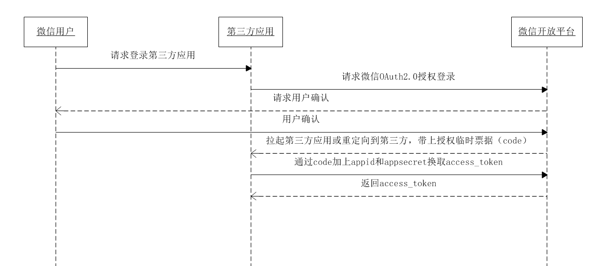

Part18-微信登录¶
01-生成授权URL¶
一、准备工作¶
1、注册¶
- 微信开放平台：https://open.weixin.qq.com
2、邮箱激活¶
3、完善开发者资料¶
4、开发者资质认证¶
准备营业执照，1-2个工作日审批、300元
5、创建网站应用¶
提交审核，7个工作日审批
6、熟悉微信登录流程¶
获取access_token时序图

第一步：请求CODE（生成授权URL）
第二步：通过code获取access_token（开发回调URL）
二、后端开发¶
service-core微服务
1、添加配置¶
application.yml添加相关配置信息
wx:
open:
# 微信开放平台 appid
appId: wxed9954c01bb89b47
# 微信开放平台 appsecret
appSecret: a7482517235173ddb4083788de60b90e
# 微信开放平台 重定向url（guli.shop需要在微信开放平台配置）
redirectUri: http://guli.shop/api/wx/callback8110
2、创建常量类¶
创建util包，创建UcenterProperties.java类
package com.atguigu.srb.core.util;
@Data
@Component
@ConfigurationProperties(prefix="wx.open")
public class CoreProperties implements InitializingBean {
private String appId;
private String appSecret;
private String redirectUri;
public static String APP_ID;
public static String APP_SECRET;
public static String REDIRECT_URI;
//当私有成员被赋值后，此方法自动被调用，从而初始化常量
@Override
public void afterPropertiesSet() throws Exception {
APP_ID = appId;
APP_SECRET = appSecret;
REDIRECT_URI = redirectUri;
}
}
pom的配置
<dependency>
<groupId>org.springframework.boot</groupId>
<artifactId>spring-boot-configuration-processor</artifactId>
<optional>true</optional>
</dependency>
<build>
<plugins>
<plugin>
<groupId>org.springframework.boot</groupId>
<artifactId>spring-boot-maven-plugin</artifactId>
<configuration>
<excludes>
<exclude>
<groupId>org.springframework.boot</groupId>
<artifactId>spring-boot-configuration-processor</artifactId>
</exclude>
</excludes>
</configuration>
</plugin>
</plugins>
</build>
3、创建controller¶
api包中创建ApiWxController
package com.atguigu.srb.core.controller;
@Api(tags = "微信登录接口")
@CrossOrigin
@Controller//注意这里没有配置 @RestController
@RequestMapping("/api/core/wx")
@Slf4j
public class WxController {
@GetMapping("/login")
public String genQrConnect(HttpSession session){
String baseUrl = "https://open.weixin.qq.com/connect/qrconnect" +
"?appid=%s" +
"&redirect_uri=%s" +
"&response_type=code" +
"&scope=snsapi_login" +
"&state=%s" +
"#wechat_redirect";
//处理回调url
String redirecturi = "";
try {
redirecturi = URLEncoder.encode(CoreProperties.REDIRECT_URI, "UTF-8");
} catch (UnsupportedEncodingException e) {
throw new BusinessException(ResponseEnum.ERROR, e);
}
//处理state：生成随机数，存入session
String state = UUID.randomUUID().toString();
log.info("生成 state = " + state);
session.setAttribute("wx_state", state);
String qrcodeUrl = String.format(
baseUrl,
CoreProperties.APP_ID,
redirecturi,
state
);
return "redirect:" + qrcodeUrl;
}
}
授权url参数说明
| 参数 | 是否必须 | 说明 |
|---|---|---|
| appid | 是 | 应用唯一标识 |
| redirect_uri | 是 | 请使用urlEncode对链接进行处理 |
| response_type | 是 | 填code |
| scope | 是 | 应用授权作用域，拥有多个作用域用逗号（,）分隔，网页应用目前仅填写snsapi_login即 |
| state | 否 | 用于保持请求和回调的状态，授权请求后原样带回给第三方。该参数可用于防止csrf攻击（跨站请求伪造攻击），建议第三方带上该参数，可设置为简单的随机数加session进行校验 |
4、测试¶
访问：访问以下授权url后会得到一个微信登录二维码
http://localhost:8110/api/core/wx/login
三、集成Spring Session¶
使用spring session实现分布式session共享，对原有代码无侵入，自动在redis中存储session信息
1、service-core中添加依赖¶
注意：不要将这个依赖添加到service-base中，否则其他服务无法启动，因为依赖需要根据当前模块的redis配置参数自动配置redis
<dependency>
<groupId>org.springframework.session</groupId>
<artifactId>spring-session-data-redis</artifactId>
</dependency>
2、添加Redis Session序列化配置¶
package com.atguigu.srb.core.config;
/**
* SpringSession Redis序列化
* *注：bean的名称必须为springSessionDefaultRedisSerializer
*
* @see org.springframework.session.data.redis.config.annotation.web.http.RedisHttpSessionConfiguration
*/
@Component("springSessionDefaultRedisSerializer")
public class SessionSerializer extends GenericJackson2JsonRedisSerializer {
}
3、session共享的测试¶
创建测试controller，比较在实现session共享之前和之后存值和取值在不同域下是否可以同步
package com.atguigu.srb.core.controller;
@RestController
@RequestMapping(value = "/core")
public class Hello {
@GetMapping("/set")
public Map<String, Object> firstResp (HttpSession session){
session.setAttribute("testKey", "testValue");
Map<String, Object> map = new HashMap<>();
map.put("testKey", "testValue");
return map;
}
@GetMapping("/query")
public Object sessions (HttpSession session){
Map<String, Object> map = new HashMap<>();
map.put("sessionId", session.getId());
map.put("testKey", session.getAttribute("testKey"));
return map;
}
}
测试的服务：
配置启动项 -Dserver.port=8111，启动两个服务 8110 和 8111
分别测试：
8110存值后
以下服务器取值的情况：8111取值、http://localhost/ 取值（nginx）、http://imhelen.free.idcfengye.com/ 取值（ngrok）
02-回调方式说明¶
一、回调方法定义¶
ApiWxController中添加方法
@GetMapping("/callback")
public String callback(String code, String state){
//回调被拉起，并获得code和state参数
System.out.println("callback被调用");
System.out.println("code = " + code);
System.out.println("state = " + state);
return null;
}
用户点击“确认登录”后，微信服务器会向谷粒学院的业务服务器发起回调，回调地址就是yml中配置的 redirectUri
二、发起回调的方式¶
1、方式一：内网穿透¶
**步骤：**开通并启动内网穿透ngrok（映射8160端口）→开放平台配置回调地址→yml配置
开放平台配置：
yml配置：
wx:
open:
# 微信开放平台 appid
appId: wxc606fb748aedee7c
# 微信开放平台 appsecret
appSecret: 073e8e1117c1054b14586c8aa922bc9c
# 微信开放平台 重定向url（guli.shop需要在微信开放平台配置）
redirectUri: http://imhelen.free.idcfengye.com/api/core/wx/callback
**注意：**yml文件中redirecturi的域名必须和开放平台中应用配置的授权回调域的值完全一致，
但是开放平台上的一个应用只能配置一个回调地址，提供给一个开发者使用
2、方式二：搭建跳转服务器¶
解决多人无法共享回调域设置的问题。
**步骤：**搭建跳转服务器→开放平台配置回调地址→yml配置
跳转程序：部署在guli.shop上
guli.shop服务器的接口可以接收微信的回调请求，将微信回调请求转发到开发者的localhost的8110端口，并传递code和state参数
开放平台配置：
授权回调域一般设置为一个内网穿透地址，例如使用ngrok工具申请一个内网穿透地止
yml配置：
wx:
open:
# 微信开放平台 appid
appId: wxed9954c01bb89b47
# 微信开放平台 appsecret
appSecret: a7482517235173ddb4083788de60b90e
# 微信开放平台 重定向url（guli.shop需要在微信开放平台配置）
redirectUri: http://guli.shop/api/wx/callback8110
三、测试回调跳转服务器¶
访问回调服务器
http://guli.shop/api/wx/callback8110?code=1234&state=666
跳转到
http://localhost:8110/api/core/wx/callback?code=1234&state=666
03-开发回调URL¶
一、准备¶
¶
1、pom依赖¶
guigu-common中引入依赖
<!--httpclient-->
<dependency>
<groupId>org.apache.httpcomponents</groupId>
<artifactId>httpclient</artifactId>
</dependency>
service-core中引入依赖
<dependency>
<groupId>com.google.code.gson</groupId>
<artifactId>gson</artifactId>
</dependency>
2、httpclient工具类¶
放入guigu-common项目的util包
HttpClientUtils.java
二、获取**access_token**¶
在WxController.java中添加如下方法
@GetMapping("/callback")
public String callback(String code, String state, HttpSession session){
//回调被拉起，并获得code和state参数
log.info("callback被调用");
log.info("code = " + code);
log.info("state = " + state);
//WEIXIN_CALLBACK_PARAM_ERROR(-601, "回调参数不正确"),
Assert.notEmpty(code, ResponseEnum.WEIXIN_CALLBACK_PARAM_ERROR);
Assert.notEmpty(state, ResponseEnum.WEIXIN_CALLBACK_PARAM_ERROR);
Assert.equals(state, (String)session.getAttribute("wx_state"), ResponseEnum.WEIXIN_CALLBACK_PARAM_ERROR);
//携带授权临时票据code，和appid以及appsecret请求access_token
String accessTokenUrl = "https://api.weixin.qq.com/sns/oauth2/access_token";
Map<String, String> accessTokenParam = new HashMap();
accessTokenParam.put("appid", CoreProperties.APP_ID);
accessTokenParam.put("secret", CoreProperties.APP_SECRET);
accessTokenParam.put("code", code);
accessTokenParam.put("grant_type", "authorization_code");
HttpClientUtils client = new HttpClientUtils(accessTokenUrl, accessTokenParam);
String result = "";
try {
//发送请求
client.setHttps(true);
client.get();
result = client.getContent();
System.out.println("result = " + result);
} catch (Exception e) {
//WEIXIN_FETCH_ACCESSTOKEN_ERROR(-602, "获取access_token失败")
throw new BusinessException(ResponseEnum.WEIXIN_FETCH_ACCESSTOKEN_ERROR, e);
}
Gson gson = new Gson();
HashMap<String, Object> resultMap = gson.fromJson(result, HashMap.class);
//判断微信获取access_token失败的响应
if(resultMap.get("errcode") != null){
String errmsg = (String)resultMap.get("errmsg");
Double errcode = (Double)resultMap.get("errcode");
log.error("获取access_token失败 - " + "message: " + errmsg + ", errcode: " + errcode);
throw new BusinessException(ResponseEnum.WEIXIN_FETCH_ACCESSTOKEN_ERROR);
}
//微信获取access_token响应成功
String accessToken = (String)resultMap.get("access_token");
String openid = (String)resultMap.get("openid");
log.info("accessToken = " + accessToken);
log.info("openid = " + openid);
//根据access_token获取微信用户的基本信息
// TODO
return null;
}
三、获取用户信息¶
1、添加openid¶
在user_info表中添加openid，用于存储微信用户的唯一身份信息
在UserInfo类中添加openid字段
@ApiModelProperty(value = "微信用户的身份信息")
private String openid;
2、根据openid查询用户是否已注册¶
业务接口：UserInfoService.java
UserInfo getByOpenid(String openid);
业务实现：MemberServiceImpl.java
@Override
public UserInfo getByOpenid(String openid) {
QueryWrapper<UserInfo> queryWrapper = new QueryWrapper<>();
queryWrapper.eq("openid", openid);
return baseMapper.selectOne(queryWrapper);
}
3、根据access_token获取用户信息¶
@Resource
private UserInfoService userInfoService;
@GetMapping("/callback")
public String callback(String code, String state, HttpSession session){
............
//根据openid查询用户是否存在
UserInfo userInfo = userInfoService.getByOpenid(openid);
//如果用户不存在，则访问微信服务器获取用户信息，并使用微信信息注册新用户
if(userInfo == null){
log.info("用户不存在");
//注册微信用户
userInfoService.registerWx(accessToken, openid);
return "redirect:http://localhost:3000/bind?openid=" + openid + "&is_bind=0";
}else if(StringUtils.isEmpty(userInfo.getMobile())){//判断是否绑定了手机号：如果未绑定手机号
log.info("用户已存在，手机号未绑定");
return "redirect:http://localhost:3000/bind?openid=" + openid + "&is_bind=0";
}else{//如果绑定了手机号
log.info("用户已存在，手机号已绑定");
return "redirect:http://localhost:3000/bind?openid=" + openid + "&is_bind=1";
}
}
UserInfoService
void registerWx(String accessToken, String openid);
UserInfoServiceImpl
@Transactional( rollbackFor = {Exception.class})
@Override
public void registerWx(String accessToken, String openid) {
//向微信的资源服务器发起请求，根据access_token获取当前用户的用户信息
String baseUserInfoUrl = "https://api.weixin.qq.com/sns/userinfo";
Map<String, String> baseUserInfoParam = new HashMap();
baseUserInfoParam.put("access_token", accessToken);
baseUserInfoParam.put("openid", openid);
HttpClientUtils client = new HttpClientUtils(baseUserInfoUrl, baseUserInfoParam);
String resultUserInfo = null;
try {
client.setHttps(true);
client.get();
resultUserInfo = client.getContent();
} catch (Exception e) {
//FETCH_USERINFO_ERROR(-603, "获取微信用户信息失败")
throw new BusinessException(ResponseEnum.WEIXIN_FETCH_USERINFO_ERROR, e);
}
Gson gson = new Gson();
HashMap<String, Object> resultUserInfoMap = gson.fromJson(resultUserInfo, HashMap.class);
if(resultUserInfoMap.get("errcode") != null){
String errmsg = (String)resultUserInfoMap.get("errmsg");
Double errcode = (Double)resultUserInfoMap.get("errcode");
log.error("获取微信用户信息失败 - " + "message: " + errmsg + ", errcode: " + errcode);
throw new BusinessException(ResponseEnum.WEIXIN_FETCH_USERINFO_ERROR);
}
String nickname = (String)resultUserInfoMap.get("nickname");
String headimgurl = (String)resultUserInfoMap.get("headimgurl");
//注册新用户
UserInfo userInfo = new UserInfo();
userInfo.setOpenid(openid);
userInfo.setNickName(nickname);
userInfo.setName(nickname);
userInfo.setHeadImg(headimgurl);
userInfo.setStatus(UserInfo.STATUS_NORMAL);
baseMapper.insert(userInfo);
//向UserAccount插入数据
UserAccount userAccount = new UserAccount();
userAccount.setUserId(userInfo.getId());
userAccountMapper.insert(userAccount);
}
四、前端整合¶
1、字体样式¶
复制srb-site\assets\font
2、样式引入¶
components\AppHeader.vue
import '~/assets/font/iconfont.css'
3、微信登录超链接¶
components\AppHeader.vue
<li>
<a href="http://localhost:8110/api/core/wx/login">
<i class="iconfont icon-weixin" />
</a>
</li>
04-绑定手机号¶
一、根据openid查询用户信息¶
1、完善UserInfoVO¶
service-core
@ApiModelProperty(value = "头像")
private String headImg;
@ApiModelProperty(value = "手机号")
private String mobile;
2、Controller¶
service-core中WxController添加接口方法
@ApiOperation("根据openid查询用户信息")
@ResponseBody
@GetMapping("/getUserInfoVO/{openid}")
public R getUserInfoVO(
@ApiParam(value = "微信用户openid", required = true)
@PathVariable String openid) {
UserInfoVO userInfoVO = userInfoService.getUserInfoVOByOpenid(openid);
return R.ok().data("userInfoVO", userInfoVO);
}
3、Service¶
接口：UserInfoService
UserInfoVO getUserInfoVOByOpenid(String openid);
实现：UserInfoServiceImpl
@Override
public UserInfoVO getUserInfoVOByOpenid(String openid) {
QueryWrapper<UserInfo> queryWrapper = new QueryWrapper<>();
queryWrapper.eq("openid", openid);
UserInfo userInfo = baseMapper.selectOne(queryWrapper);
UserInfoVO userInfoVO = new UserInfoVO();
BeanUtils.copyProperties(userInfo, userInfoVO);
return userInfoVO;
}
二、前端展示绑定页面¶
1、页面脚本¶
pages/bind.vue
<script>
import '~/assets/css/register.css'
import cookie from 'js-cookie'
export default {
data() {
return {
userInfo: {}, //展示用户信息对象
wxBind: {
userType: 1, //初始化
}, //绑定对象
sending: false, // 是否发送验证码
second: 10, // 倒计时间
leftSecond: 0, //剩余时间
isValid: false, //表单校验是否成功
}
},
mounted() {
if (this.$route.query.openid) {
this.showUserInfo()
}
},
methods: {
showUserInfo() {
this.$axios
.$get('/api/core/wx/getUserInfoVO/' + this.$route.query.openid)
.then((response) => {
this.userInfo = response.data.userInfoVO
})
},
bind() {
//TODO
},
//发送验证码
send() {
//参考注册
},
//倒计时
timeDown() {
//参考注册
},
//表单验证
checkForm() {
//参考注册
},
},
}
</script>
2、页面模板¶
模板实现说明
三、绑定接口¶
1、创建WxBindVO¶
service-core中创建VO
package com.atguigu.srb.core.pojo.vo;
@Data
@ApiModel(description="微信绑定手机号对象")
public class WxBindVO {
@ApiModelProperty(value = "微信openid")
private String openid;
@ApiModelProperty(value = "手机号")
private String mobile;
@ApiModelProperty(value = "1：出借人 2：借款人")
private Integer userType;
@ApiModelProperty(value = "验证码")
private String code;
}
2、Controller¶
service-core中WxController添加接口方法
@Resource
private RedisTemplate redisTemplate;
@ApiOperation("绑定手机号")
@ResponseBody
@PostMapping("/bind")
public R bind(
@ApiParam(value = "微信绑定对象", required = true)
@RequestBody WxBindVO wxBindVO,
HttpServletRequest request) {
String mobile = wxBindVO.getMobile();
String code = wxBindVO.getCode();
//校验用户的输入参数
Assert.notEmpty(mobile, ResponseEnum.MOBILE_NULL_ERROR);
Assert.isTrue(RegexValidateUtils.checkCellphone(mobile), ResponseEnum.MOBILE_ERROR);
Assert.notEmpty(code, ResponseEnum.CODE_NULL_ERROR);
//校验验证码
String codeRedis = (String) redisTemplate.opsForValue().get("srb:sms:code:" + mobile);
Assert.equals(code, codeRedis, ResponseEnum.CODE_ERROR);
//绑定并登录
String ip="";
if (request.getHeader("x-forwarded-for") == null) {
ip=request.getRemoteAddr();
}else {
ip=request.getHeader("x-forwarded-for");
}
UserInfoVO userInfoVO = userInfoService.bind(wxBindVO, ip);
return R.ok().message("绑定成功").data("userInfoVO", userInfoVO);
}
3、Service¶
接口：UserInfoService
UserInfoVO bind(WxBindVO wxBindVO, String remoteAddr);
实现：UserInfoServiceImpl
@Transactional( rollbackFor = {Exception.class})
@Override
public UserInfoVO bind(WxBindVO wxBindVO, String remoteAddr) {
//判断用户当前手机号是否被注册：根据手机号查询当前用户是否存在
QueryWrapper<UserInfo> userInfoQueryWrapper = new QueryWrapper<>();
userInfoQueryWrapper.eq("mobile", wxBindVO.getMobile());
Integer count = baseMapper.selectCount(userInfoQueryWrapper);
Assert.isTrue(count == 0, ResponseEnum.MOBILE_EXIST_ERROR);
//根据openid获取用户信息
QueryWrapper<UserInfo> queryWrapper = new QueryWrapper<>();
queryWrapper.eq("openid", wxBindVO.getOpenid());
UserInfo userInfo = baseMapper.selectOne(queryWrapper);
//绑定手机号
userInfo.setUserType(wxBindVO.getUserType());
userInfo.setMobile(wxBindVO.getMobile());
baseMapper.updateById(userInfo);
//记录登录日志
UserLoginRecord userLoginRecord = new UserLoginRecord();
userLoginRecord.setIp(remoteAddr);
userLoginRecord.setUserId(userInfo.getId());
userLoginRecordMapper.insert(userLoginRecord);
//生成token
String token = JwtUtils.createToken(userInfo.getId(), userInfo.getName());
UserInfoVO userInfoVO = new UserInfoVO();
userInfoVO.setToken(token);
userInfoVO.setName(userInfo.getName());
userInfoVO.setNickName(userInfo.getNickName());
userInfoVO.setHeadImg(userInfo.getHeadImg());
userInfoVO.setMobile(userInfo.getMobile());
userInfoVO.setUserType(wxBindVO.getUserType());
return userInfoVO;
}
四、前端调用绑定接口¶
pages/bind
bind() {
this.wxBind.openid = this.$route.query.openid
this.$axios.$post('/api/core/wx/bind', this.wxBind).then((response) => {
cookie.set('userInfo', response.data.userInfoVO, {
domain: 'localhost',
})
window.location.href = '/user'
})
},
05-手机号已绑定¶
一、前端¶
pages/bind
1、脚本¶
页面加载时判断用户是否已绑定
mounted() {
this.isBind = this.$route.query.is_bind === '1' ? true : false
if (this.$route.query.openid) {
this.wxBind.openid = this.$route.query.openid
this.showUserInfo()
}
},
如果用户已绑定手机号，则直接登录
showUserInfo() {
this.$axios
.$get('/api/core/wx/getUserInfoVO/' + this.wxBind.openid)
.then((response) => {
this.userInfo = response.data.userInfoVO
//如果用户已绑定手机号，则直接登录
if (this.isBind) {
this.login()
}
})
},
登录脚本
login() {
this.wxBind.mobile = this.userInfo.mobile
this.wxBind.userType = this.userInfo.userType
this.$axios.$post('/api/core/wx/login', this.wxBind).then((response) => {
cookie.set('userInfo', response.data.userInfoVO, {
domain: 'localhost',
})
window.location.href = '/user'
})
},
2、页面¶
如果用户已绑定则不展示填写手机号的页面
<div v-if="isBind" class="bind">
<div class="registerCont">
<ul>
<li>
<div class="user-head">
<img :src="userInfo.headImg" />
<p>{{ userInfo.nickName }}</p>
</div>
</li>
</ul>
</div>
</div>
<div v-else class="bind">
</div>
二、后端接口¶
1、Controller¶
service-core中WxController添加接口方法
@ApiOperation("微信用户登录")
@ResponseBody
@PostMapping("/login")
public R login(
@ApiParam(value = "微信绑定对象", required = true)
@RequestBody WxBindVO wxBindVO,
HttpServletRequest request) {
//绑定并登录
String ip="";
if (request.getHeader("x-forwarded-for") == null) {
ip=request.getRemoteAddr();
}else {
ip=request.getHeader("x-forwarded-for");
}
UserInfoVO userInfoVO = userInfoService.login(wxBindVO, ip);
return R.ok().message("绑定成功").data("userInfoVO", userInfoVO);
}
2、Service¶
接口：UserInfoService
UserInfoVO login(WxBindVO wxBindVO, String remoteAddr);
实现：UserInfoServiceImpl
@Transactional( rollbackFor = {Exception.class})
@Override
public UserInfoVO login(WxBindVO wxBindVO, String remoteAddr) {
String mobile = wxBindVO.getMobile();
Integer userType = wxBindVO.getUserType();
String openid = wxBindVO.getOpenid();
//查看用户是否存在
QueryWrapper<UserInfo> userInfoQueryWrapper = new QueryWrapper<>();
userInfoQueryWrapper
.eq("mobile", mobile)
.eq("user_type", userType)
.eq("openid", openid);
UserInfo userInfo = baseMapper.selectOne(userInfoQueryWrapper);
//用户不存在
Assert.notNull(userInfo, ResponseEnum.LOGIN_MOBILE_ERROR);
//用户是否被禁用
Assert.equals(userInfo.getStatus(), UserInfo.STATUS_NORMAL, ResponseEnum.LOGIN_LOKED_ERROR);
//记录登录日志
UserLoginRecord userLoginRecord = new UserLoginRecord();
userLoginRecord.setIp(remoteAddr);
userLoginRecord.setUserId(userInfo.getId());
userLoginRecordMapper.insert(userLoginRecord);
//生成token
String token = JwtUtils.createToken(userInfo.getId(), userInfo.getName());
UserInfoVO userInfoVO = new UserInfoVO();
userInfoVO.setToken(token);
userInfoVO.setName(userInfo.getName());
userInfoVO.setNickName(userInfo.getNickName());
userInfoVO.setHeadImg(userInfo.getHeadImg());
userInfoVO.setMobile(userInfo.getMobile());
userInfoVO.setUserType(userType);
return userInfoVO;
}
本文总阅读量次